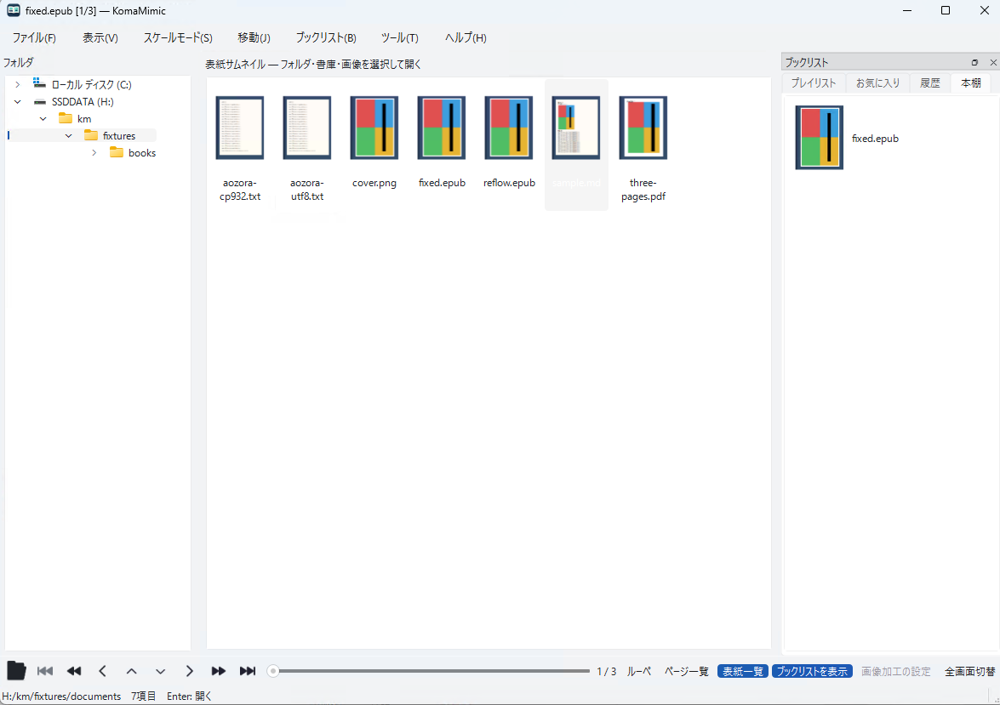

本棚・履歴・しおり
日本語 | English
「ブックリスト」メニューから履歴・お気に入り・プレイリスト・本棚を利用できます。 最近開いた本や登録した本を一覧から選び直し、保存された位置から読み続けられます。
登録と再開
読書中に「ブックリスト」のお気に入り・プレイリスト・本棚への追加を選びます。 表紙や背表紙の登録、リストの詳細・保存・読み込みも同じメニューにあります。 履歴と再開位置の保存は「ブックリスト → 履歴・再開位置の設定…」で調整します。 実際の本を移動・削除すると、以前のパスを指す項目からは開けなくなる場合があります。
現在位置のマーカーと、目次への登録・移動も「ブックリスト」から行います。 文書の目次は書籍が持つ目次と本文位置を使い、画像のページ番号と区別します。

並び順と再生
「ツール → ファイルソート」で自然順・名前・種類・サイズ・日時・書庫順などを選べます。 表紙一覧の並び方はフォルダ・表紙一覧の設定で指定します。 「ブックリスト → ページ・プレイリストの再生」で自動再生を操作できます。 間隔は「環境設定 → 表示」の「自動再生の間隔（ミリ秒）」で設定します。 MangaMeeyaの専用ダイアログとは設定場所が異なります。 通常の順再生・逆再生でページを送る際は手動の次／前と同じ扱いで、見開きや本の末端での動作も通常のページ送りの設定に従います。 これはGIF等のアニメーション画像の再生とは別です。アニメーションの操作は「ツール」にあります。
登録内容・履歴はローカルの読書データです。保存場所とバックアップを参照してください。